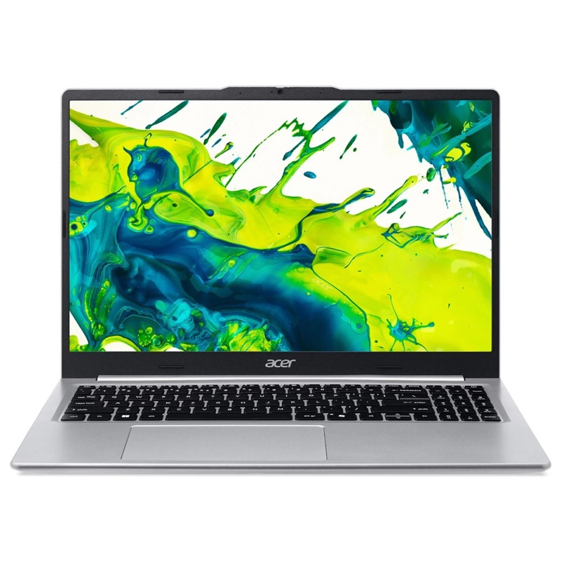

שודרג ל-16GBAcer Aspire Lite 15
Ryzen 7 · 16GB · 512GB
נייד 15.6 אינץ' חזק במחיר שפוי: מעבד AMD Ryzen 7 עם 8 ליבות מלאות, וזיכרון ששדרגנו ל-16GB כדי שיעבוד חלק גם עם הרבה לשוניות, Office וזום במקביל. גוף כסוף דק ומסך Full HD IPS.
⚡
מעבד 8 ליבות
Ryzen 7 5825U
8 ליבות ו-16 תהליכונים, עד 4.5GHz. כוח שמספיק לעבודה משרדית כבדה, הרבה תוכנות פתוחות ועריכת תמונות.
🚀
שודרג אצלנו
16GB DDR4
במקום 8GB מהיצרן: שני כרטיסי זיכרון שעובדים בשני ערוצים (Dual Channel), מה שגם מאיץ את הגרפיקה המובנית.
- 💾512GB SSD NVMeהדלקה ופתיחת תוכנות תוך שניות
- 🖥מסך 15.6 אינץ' Full HD IPS1920×1080, צבעים וזוויות צפייה טובים, ציפוי נגד השתקפויות
- 🔌טעינה ב-USB-Cשתי יציאות USB-C, HDMI וקורא כרטיסים
- 📶Wi-Fi 6 ומצלמה Full HDאינטרנט מהיר יותר ושיחות וידאו חדות
למי זה מתאים?
🏠
בית ומשפחה
גלישה, סרטים, זום, שיעורי בית ותמונות, על מסך 15.6 אינץ' נוח.
💼
עבודה משרדית
Excel גדולים, הרבה לשוניות ותוכנות פתוחות במקביל, בזכות 8 ליבות ו-16GB.
🎓
סטודנטים
1.45 ק"ג ועובי 1.69 ס"מ, עם מקלדת מלאה כולל מקשי ספרות.
מתאים לעבודה יומיומית ומשרדית. בלי כרטיס מסך נפרד, ולכן לא מיועד לעריכת וידאו מקצועית, תלת-ממד או משחקים כבדים.
מפרט
| מעבד | AMD Ryzen 7 5825U: 8 ליבות / 16 תהליכונים, בסיס 2.0GHz, עד 4.5GHz, מטמון 16MB |
|---|---|
| גרפיקה | AMD Radeon Graphics משולב |
| זיכרון | 16GB DDR4 (2 × 8GB, Dual Channel). שודרג אצלנו מ-8GB |
| אחסון | 512GB SSD M.2 NVMe PCIe |
| מסך | 15.6 אינץ' Full HD (1920×1080) IPS, 60Hz, SlimBezel, ציפוי נגד השתקפויות |
|---|---|
| יציאות | USB-C 3.2 (טעינה ומסך חיצוני) USB-C 3.2 USB-A 3.2 USB-A 2.0 HDMI, קורא כרטיסי microSD, שקע אוזניות 3.5 מ"מ |
| מצלמה | Full HD (1080p) |
| תקשורת | Wi-Fi 6 + Bluetooth |
| מקלדת | מקלדת מלאה עם מקשי ספרות |
|---|---|
| סוללה | 53Wh, טעינה ב-USB-C (65W) |
| משקל ומידות | 1.45 ק"ג · 36.1 × 23.5 × 1.69 ס"מ |
| צבע | Light Silver (כסוף) |
| מערכת הפעלה | מגיע מהיצרן ללא מערכת הפעלה. אצלנו: כולל התקנות מלאות |
| אחריות | שנה |
| דגם | Acer Aspire Lite AL15-48P-R1RT (NX.DTBEC.001) |
המפרט לפי נתוני היצרן (Acer) ועשוי להשתנות. התמונות להמחשה בלבד.